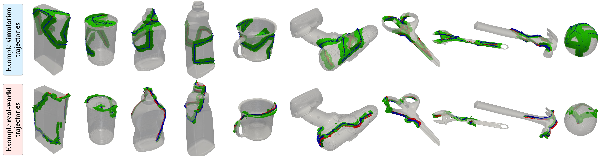

MidasTouch: Monte-Carlo inference over
distributions across sliding touch
CoRL 2022 (Oral)
- Sudharshan Suresh CMU RI / Meta AI
- Zilin Si CMU RI
- Stuart Anderson Meta AI
- Michael Kaess CMU RI
- Mustafa Mukadam Meta AI
TL;DR: We track the pose distribution of a robot finger on an
object's surface using geometry captured by a tactile sensor
Overview
MidasTouch is a tactile perception system for online global localization of a vision-based touch sensor sliding on an object surface. This framework takes in posed tactile images over time, and outputs an evolving distribution of sensor pose on the object's surface, without the need for visual priors. Our key insight is to estimate local surface geometry with tactile sensing, learn a compact representation for it, and disambiguate these signals over a long time horizon. The backbone of MidasTouch is a Monte-Carlo particle filter, with a measurement model based on a tactile code network learned from tactile simulation. This network, inspired by LIDAR place recognition, compactly summarizes local surface geometries. These generated codes are efficiently compared against a precomputed tactile codebook per-object, to update the pose distribution. While single-touch localization can be inherently ambiguous, we can quickly localize our sensor by traversing salient surface geometries. Additionally, the YCB-Slide dataset is a corpus of real-world and simulated forceful sliding interactions between a vision-based tactile sensor and YCB objects.
Full pipeline
MidasTouch performs online global localization of a vision-based touch sensor on an object surface during sliding interactions. Given posed tactile images over time, this system leverages local surface geometry within a nonparametric particle filter to generate an evolving distribution of sensor pose on the object’s surface.
It comprises three distinct modules, as illustrated above: a tactile depth network (TDN), tactile code network (TCN), and particle filter. At a high-level, the TDN first converts a tactile image into its local 3D geometry via a learned observation model. The 3D information is then condensed into a tactile code by the TCN through a sparse 3D convolution network. Finally, the downstream particle filter uses these learned codes in its measurement model, and outputs a sensor pose distribution that evolves over time.
The tactile depth network learns the inverse sensor model to recover local 3D geometry from a tactile image. We adapt a fully-convolutional residual network, and train it in a supervised fashion to predict local heightmaps from tactile images. Above we see real-world DIGIT images from interactions alongside the predicted 3D geometries.
Tactile codes
This network summarizes large, unordered point clouds of local geometry into a low-dimensional embedding space, or code. If two sensor measurements are nearby in pose-space, they observe similar geometries and therefore, their codes will also be nearby in embedding-space.
The tactile codebooks comprising of 50k randomized sensor poses on each object’s mesh. We evenly sample these points and normals on the mesh with random orientations and indentations. We feed these poses into TACTO to generate a dense set of tactile images for each object. Local geometric similarity are visualized below for the YCB object set.
Tactile codebook per object visualized as a spectral colorspace map using t-SNE. Each codebook comprises of 50k densely sampled poses with their corresponding 256-dimensional tactile code. Similar hues denote sensor poses that elicit similar tactile codes. We can clearly delineate local geometric features: edges (sugar_box) , ridges (power_drill), corners (scissors), and complex texture (baseball)
YCB-Slide dataset
To evaluate MidasTouch, and enable further research in tactile sensing, we introduce our YCB-Slide dataset. It comprises of DIGIT sliding interactions on the 10 YCB objects from Section 4. We envision this can contribute towards efforts in tactile localization, mapping, object understanding, and learning dynamics models.

We provide access to DIGIT images, sensor poses, ground-truth mesh models, and ground-truth heightmaps + contact masks (simulation only). Example sliding trajectories from simulated and real trials on the 10 YCB objects. Overlaid in green are the local 3D geometries captured by the tactile sensor, and the contact poses as RGB coordinate axes.
Representative results: simulation
Selected results from the YCB-Slide simulated dataset. In each video, we see the tactile images, local geometries, tactile code heatmap, pose distribution, and average translation/rotation RMSE.
Click on each object to view results
Representative results: real-world
Selected results from the YCB-Slide real-world dataset. For more results, quantitative metrics, ablations, and discussions on failure modes refer to the paper.
Click on each object to view results
Video presentation
Related reading
- TACTO and Taxim are great vision-based tactile simulators for the DIGIT and Gelsight.
- Tac2Pose performs pose estimation of small-parts with the GelSlim with single and multi-touch sequences.
- For the local tracking problem with vision-based touch, have a look at PatchGraph and learned tactile factors.
- NCF tracks extrinsic contact (between object-environment), converse to our problem (between robot-object).
- 3D pointcloud features can be derived with the FCGF library, also integrated into LiDAR SLAM in MinkLoc3D.
Bibtex
Acknowledgements
We thank Wenzhen Yuan, Ming-Fang Chang, and Wei Dong for insightful discussions. We are grateful towards the CMU AI Maker Space and Greg Armstrong for facilitating the collection of the YCB-Slide dataset. The authors acknowledge funding from Meta AI, and this work was partially carried out while Sudharshan Suresh interned at Meta AI.
The website template was borrowed from John Barron and Michaël Gharbi.